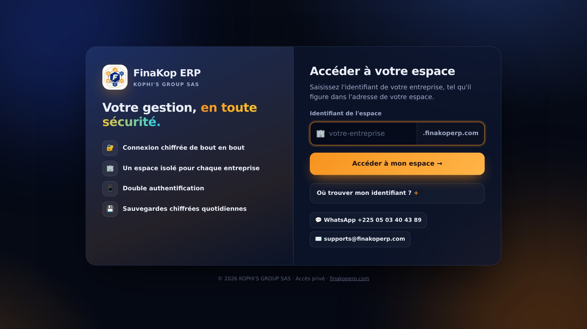
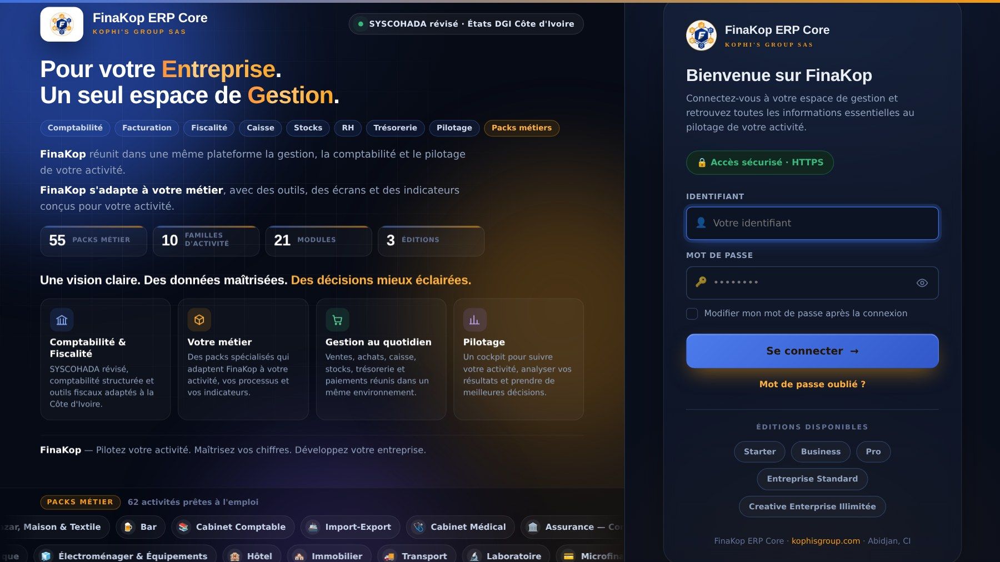
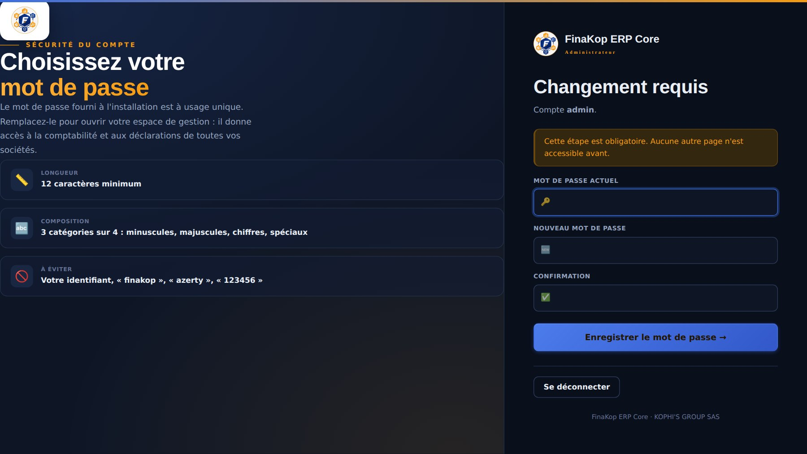
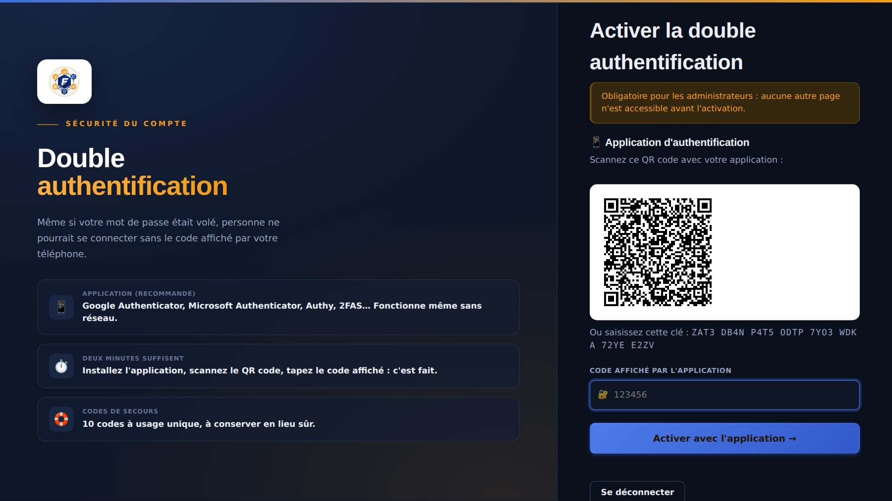
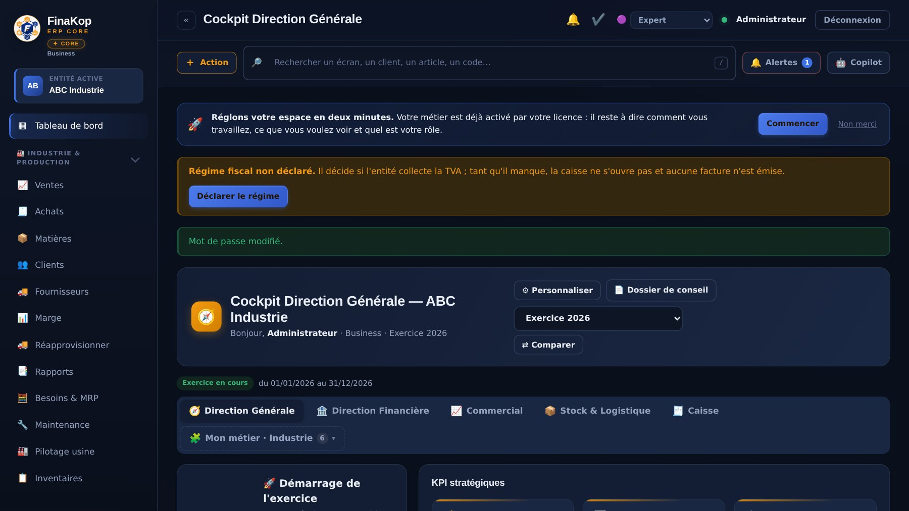
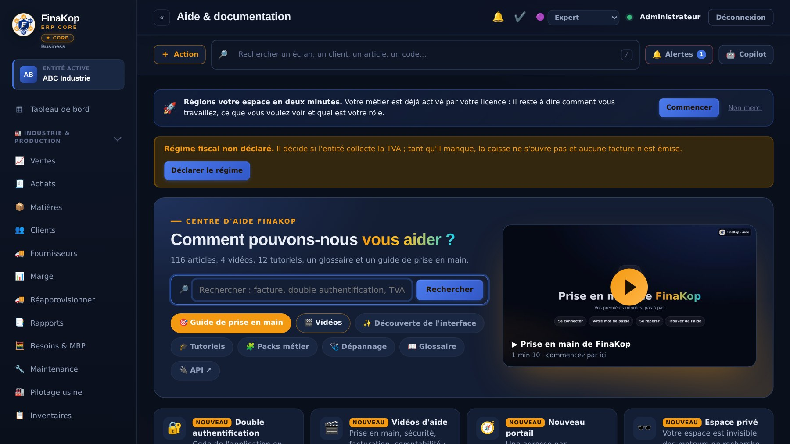

🚀
Prise en main de FinaKop
Vos premières minutes, pas à pas
Se connecterVotre mot de passeSe repérerTrouver de l'aide

L'identifiant de votre entreprise
Puis « Accéder à mon espace »
1
Accédez à votre espaceOuvrez l'adresse de votre entreprise, ou le portail app.finakoperp.com et saisissez son identifiant.

Votre identifiant
Votre mot de passe
Se connecter
2
Connectez-vousIdentifiant et mot de passe reçus de votre administrateur.

Les règles à respecter
Le mot de passe provisoire
Le nouveau, deux fois
3
Choisissez votre mot de passeLe mot de passe reçu est provisoire : choisissez le vôtre, 12 caractères minimum, 3 catégories sur 4.

Un QR code à scanner avec votre téléphone
4
Activez la double authentificationObligatoire pour les administrateurs : voyez la vidéo « Sécuriser votre compte ».

L'entité active : changez de société ici
Vos modules
5
Le menu et votre entitéÀ gauche : l'entité active et vos modules, regroupés par activité.
Recherche (touche /)
« + Action »
6
Rechercher et agir viteLa recherche trouve un écran, un client, un article. « + Action » crée une facture, un reçu…
Alertes
Copilot
7
Alertes et assistantLes alertes signalent ce qui demande votre attention ; Copilot vous aide à analyser.

Rechercher dans toute l'aide
Les vidéos de prise en main
Guide, vidéos, tutoriels, dépannage
8
Trouver de l'aideMenu Aide : recherche, guide de prise en main, vidéos, tutoriels et dépannage.
💬
Une question ? Nous sommes là.
Le support FinaKop vous répond
💬 WhatsApp +225 05 03 40 43 89✉️ supports@finakoperp.com❓ Menu Aide : guide, tutoriels, vidéos